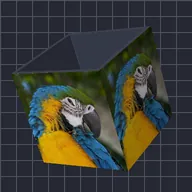

Полая коробка

Коробка с открытыми верхом и низом: слой покрывает внешнюю часть, а внутренняя принимает цвет внутренней поверхности.
Настройки
| Настройка | Тип | Диапазон | По умолчанию |
|---|---|---|---|
| Поворот X | Угол | от -3600° до 3600° | -28° |
| Поворот Y | Угол | от -3600° до 3600° | -35° |
| Поворот Z | Угол | от -3600° до 3600° | 0° |
| Ширина | Число | от 0.02 до 5 | 0.7 |
| Высота | Число | от 0.02 до 5 | 0.7 |
| Глубина | Число | от 0.02 до 5 | 0.7 |
| Толщина | Число | от 0.005 до 1 | 0.06 |
| Сглаживание | Число | от 0 до 1 | 0.15 |
| Внутренний цвет | Цвет | – | #3D4152 |
| Позиция | Точка (X, Y) | от -5000 px до 5000 px | 0 px, 0 px |
| Масштаб | Число | от 0.05 до 10 | 1 |
| Перспектива | Число | от 0 до 1 | 0.5 |
| Затенение | Число | от 0 до 1 | 0.6 |
| Угол света | Угол | от -3600° до 3600° | 135° |
| Блик | Число | от 0 до 1 | 0.3 |